# Leer y escribir archivo de control: control.ss
control_file = SS_readctl(file = 'ss_models/simple/control.ss')
control_file$MG_parms
control_file$SR_parms
control_file$size_selex_types
# ... explorar
# Modificar el R object si es necesario
# Escribirlo nuevamente:
SS_writectl(ctllist = control_file, outfile = 'ss_models/simple/control.ss')Modelos avanzados en evaluación de recursos pesqueros
Dr. Giancarlo M. Correa
Cousteau Consultant Group
Modelo poblacional
Estructura interna
Dos principales dimensiones: años y edad.
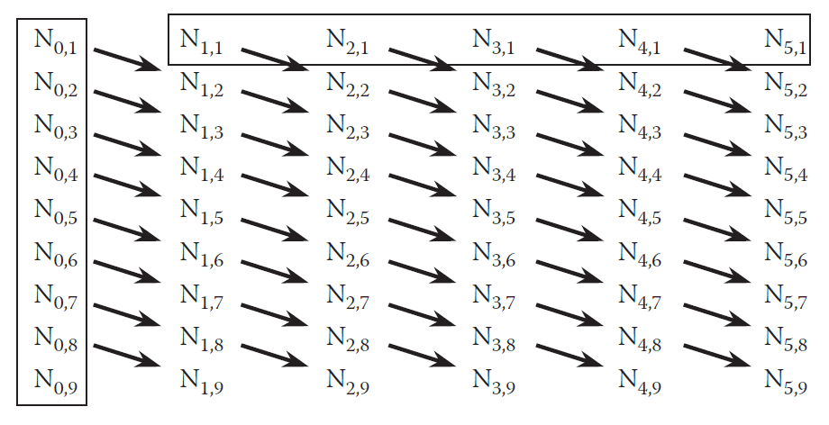Haddon (2011)
Crecimiento: estructura inicial
Al nacer, se asigna la talla mínima en la población (\(L_{min}\)). Luego, crecen linealmente hasta \(A_1\):
\[L_{0,a} = L_{min} + ba\]
Donde
\[b = \frac{L_{A_1}- L_{min}}{A_1}\]
- \(a=\) edad
- \(A_1=\) edad de referencia (cercana a la edad 0). Se recomienda que sea la edad donde comenzamos a tener buenos datos
Crecimiento: estructura inicial
Para \(a > A_1\), los peces crecen según la ecuación de crecimiento seleccionada
Por ejemplo, usando la ecuación de von Bertalanffy, longitud media a la edad de la población:
\[L_{0,a} = L_{\infty} + (L_{A_1} - L_{\infty})(exp(-k(a-A_1)))\]
- \(L_{A_1}=\) longitud media a la edad \(A_1\) (\(cm\))
- \(L_{\infty}=\) longitud asintótica (\(cm\))
- \(k=\) tasa de crecimiento (\(1/year\))
Crecimiento: dinámica
Para \(y>0\), usamos:
\[L_{y+1,a+1} = L_{y,a} + (L_{y,a}-L_{\infty})(exp(-k) - 1)\]
Para el grupo plus, la ecuación es ligeramente diferente para acumular tallas (ver Technical Description, Methot and Wetzel (2013)).
Crecimiento
Para cualquier fracción \(\theta\) del año:
\[\tilde{L}_{y,a}=L_{y,a} + (L_{y,a}-L_{\infty})(exp(-k\theta)-1)\]
Esto es importante dado que los peces también crecen dentro de un año.
Crecimiento
Otras parametrizaciones estan disponibles:
- Richards (Richards 1959)
- von Bertalanffy with age-specific K
- Growth cessation (Maunder et al. 2018)
Crecimiento
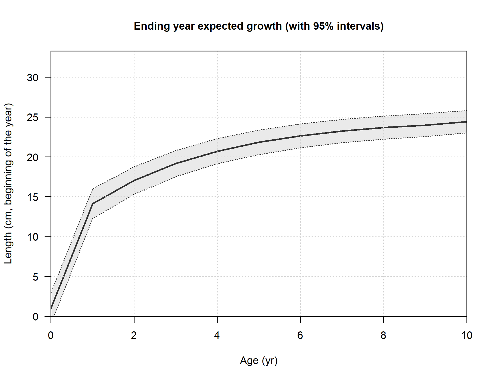Talla media a la edad de la población.
Crecimiento
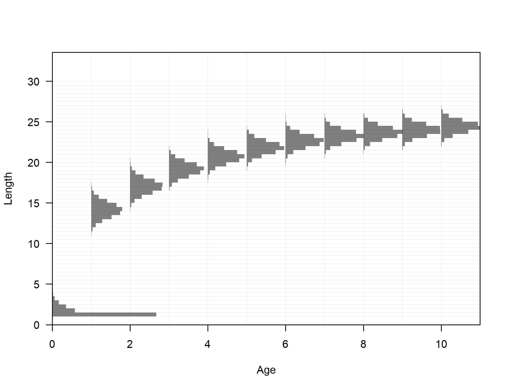Variabilidad de tallas por edad.
Crecimiento
Variabilidad de tallas por edad:
\[\sigma_{y,a} = \begin{cases} \tilde{L}_{y,a}(CV_1) &\text{a$\leq$ A1}\\ \tilde{L}_{y,a}(CV_1+\frac{\tilde{L}_{y,a}-L_1}{L_2-L_1}(CV_2 - CV1)) &\text{a>A1} \end{cases}\]
Donde tenemos dos parámetros:
- \(CV_1\) es el coeficiente de variación de longitudes en la edad \(A_1\)
- \(CV_2\) es el coeficiente de variación de longitudes en la máxima edad
También podemos calcular \(\sigma_{y,a}\) como función de la edad.
Crecimiento
Distribuye la información de cada edad entre las diferentes marcas de clase modeladas.
\[\varphi_{y,l,a}=\begin{cases} \Phi(\frac{L'_{min^\ast} - L_{y,a}}{\sigma_{y,a}})\hspace{3.2cm}l=1\\ \Phi(\frac{L'_{l+1} - L_{y,a}}{\sigma_{y,a}})-\Phi(\frac{L'_{l} - L_{y,a}}{\sigma_{y,a}})\hspace{1cm}1<l<n_L\\ 1-\Phi(\frac{L'_{max} - L_{y,a}}{\sigma_{y,a}})\hspace{2.5cm}l=n_L \end{cases}\]
\(\Phi\) es la distribución normal estándar acumulada, \(L'\) representa las marcas de clase modeladas, \(l\) es indicador de marca de clase, \(n_L\) es el número de marcas de clase. \(L\) también podría ser \(\tilde{L}\).
Crecimiento
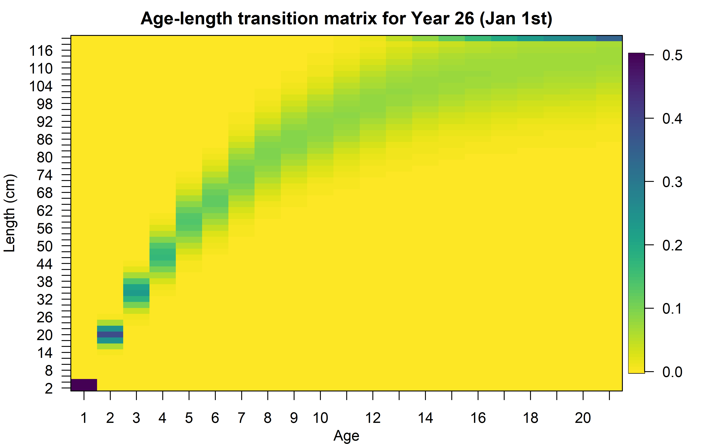Crecimiento

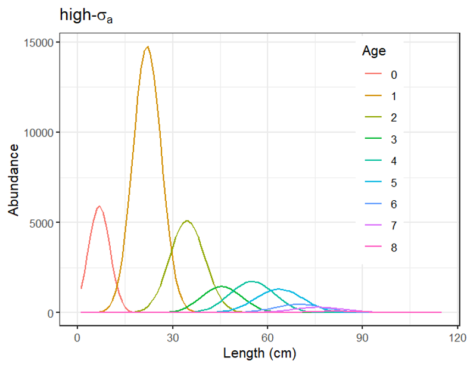
Crecimiento
También podemos modelar morphs, que son colecciones de peces de una cohorte con carácterísticas biológicas únicas (e.g., mortalidad, crecimiento). Usado cuando queremos modelar, por ejemplo, diferentes parámetros biológicos en diferentes áreas o seasons.
Estos morphs a su vez pueden ser dividos en platoons para permitir supervivencia dependiente de la talla. Ver este artículo: McGarvey et al. (2024).
Longitud-peso
Convertir de talla a edad:
\[w_l = \Omega_1 (L_l')^{\Omega_2}\]
Donde \(\Omega_1\) y \(\Omega_2\) son parámetros del modelo.
Longitud-peso
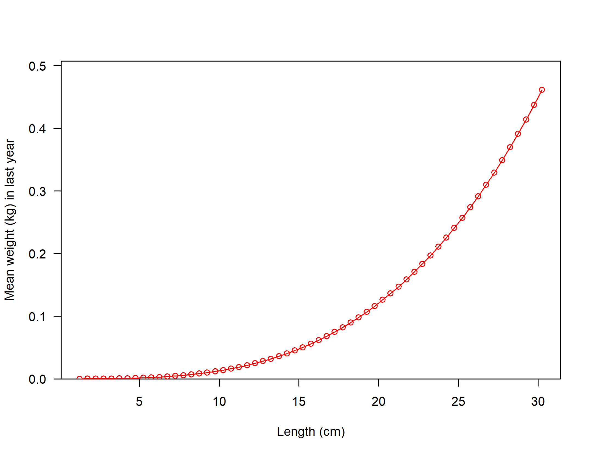Madurez sexual
Puede ser modelada como una función de talla o edad. Como función de talla:
\[Mat_l = \frac{1}{1+exp(\Omega_4(L'_l - \Omega_3))}\]
Donde \(\Omega_3\) (talla a 50% madurez) y \(\Omega_4\) (pendiente) son parámetros del modelo.
Madurez sexual
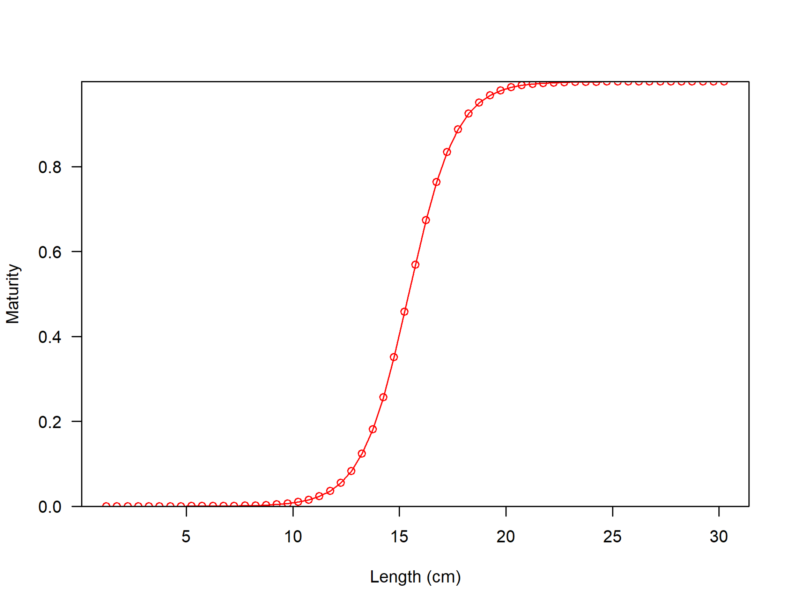Producción de huevos
La producción de huevos es modelada como una función de la talla:
\[Eggs_l = \Omega_5 + w_l \Omega_6\]
Donde \(Eggs_l\) representa la producción de huevos por kg de peso de la hembra. Donde \(\Omega_5\) y \(\Omega_6\) son parámetros del modelo.
Producción de huevos
Asumiendo \(\Omega_5 = 1\) y \(\Omega_6=0\):
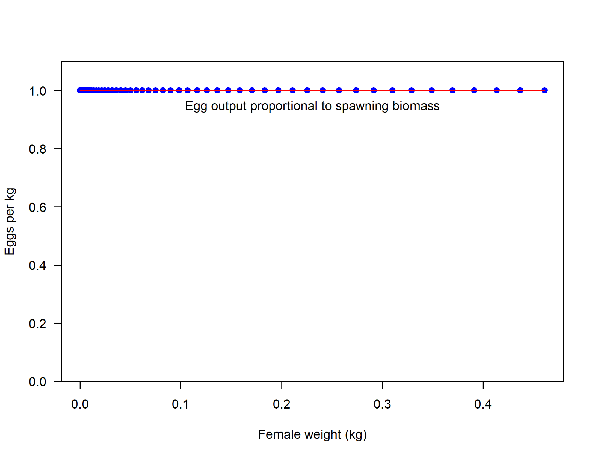Fecunidad
Es modelada como:
\[f_{y,a} = \sum_l\varphi_{y,l,a}(Mat_lEggs_lw_l)\]
Finalmente, la biomasa desovante (SSB) puede ser estimada como:
\[SSB_y = \sum_a N_{y,a} f_{y,a}\]
Stock-reclutamiento
Usando la función Berverton-Holt:
\[R_y = \frac{4hR_0SSB_y}{SSB_0(1-h)+SSB_y(5h-1)}exp(-0.5b_y \sigma_R^2 + \tilde{R}_y)\]
Donde \(\tilde{R}_y \sim N(0,\sigma_R^2)\). \(R_0\) es el reclutamiento sin pesca, \(SSB_0\) es la biomasa desovante sin pesca, \(h\) es el steepness, \(b_y\) es el ajuste de sesgo aplicado durante el año \(y\), \(\sigma_R\) es la desviación estándar de desviaciones de reclutamiento en el espacio log natural, y \(\tilde{R}_y\) es es la desviación de reclutamiento lognormal.
Stock-reclutamiento
Usando la función Ricker:
\[R_y = \frac{R_0SSB_y}{SSB_0}exp(h(1-SSB_y/SSB_0))exp(-0.5b_y \sigma_R^2 + \tilde{R}_y)\]
Existen otras funciones stock-reclutamiento como: Hockey-Stick, Shepherd, Survivorship (Taylor et al. 2013), versión modificada de Ricker (Punt and Cope 2019).
Ajuste de sesgo
Aplicado para corregir sesgo entre transformaciones en escala natural y log (Methot and Taylor 2011). Normalmente se realiza un ajuste máximo durante el periodo con mayor cantidad de datos.
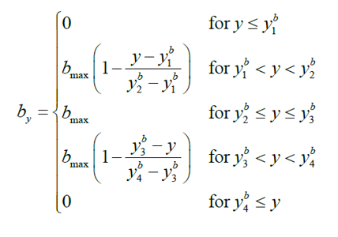
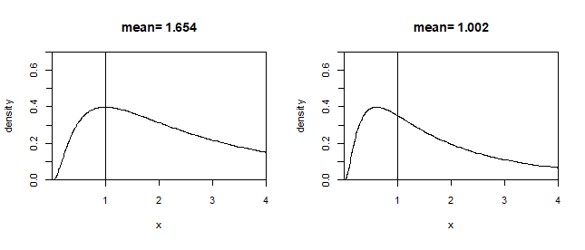
Stock-reclutamiento
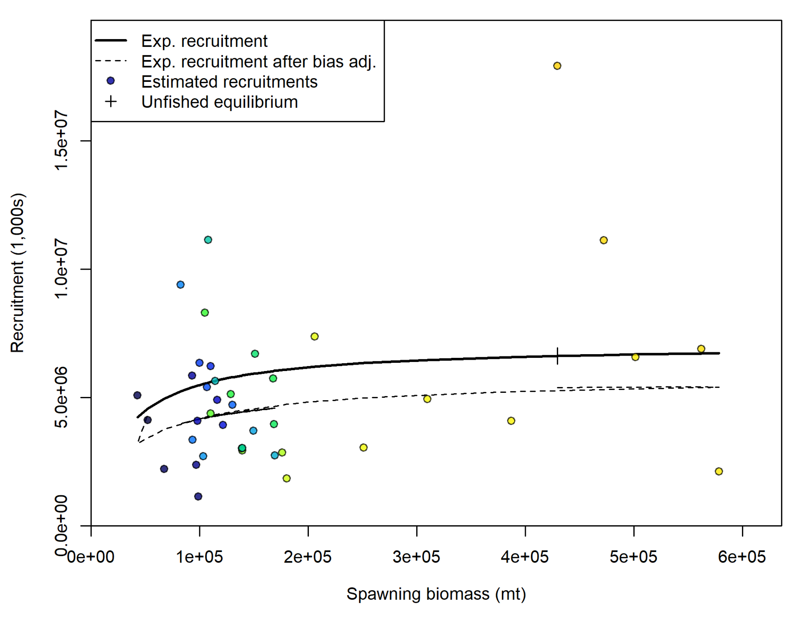
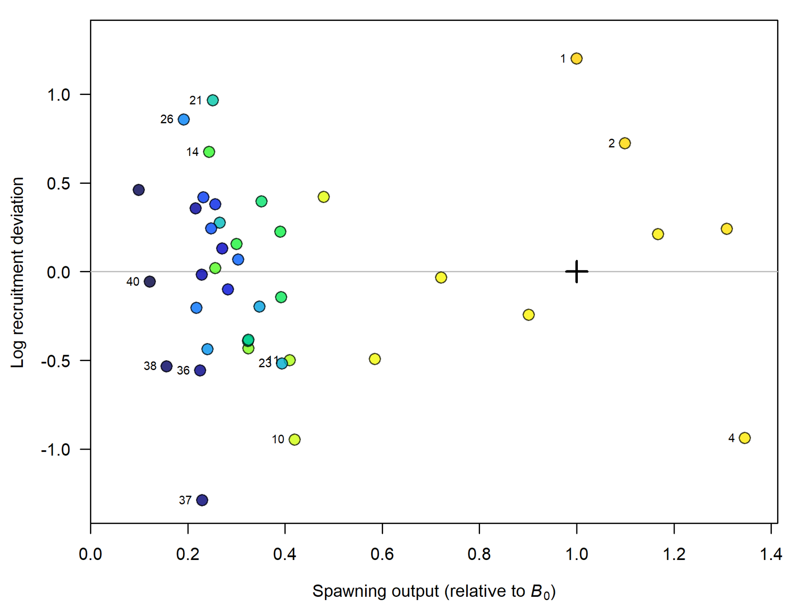
Reclutamiento
El desove ocurre una vez por año (configuración por defecto), pero varios eventos de reclutamiento pueden ser especificado dentro del año (settlements).
La propoción del reclutamiento anual en cada settlements es estimada como parámetros.
Mortalidad natural
\(M\) es en muchos casos asumido constante para todas las edades (1 parámetro).
Hay opciones para especificar \(M\) específico a la edad, o que varíe en función a la talla:
- \(M\) independiente a la edad
- Lorenzen (Lorenzen 2022): toma en cuenta procesos fisiológicos a lo largo del ciclo de vida
- \(M\) específico a la edad relacionado a talla y madurez (Maunder et al. 2023)
Abundancia: estructura inicial
Calculamos la abundancia a la edad (\(a<A\)):
\[N_{0,a}=R_0exp(-aM)\]
Esta ecuación varía para el grupo plus \(A\) (ver Technical Description, Methot and Wetzel (2013)).
Abundancia: dinámica
\[N_{y+1,a} = \begin{cases} R_{y+1} &a=0\\ N_{y,a-1}exp(-Z_{y,a}) &1\leq a\leq A-1\\ N_{y, A-1}exp(-Z_{y,A-1})+N_{y,A}exp(-Z_{y,A}) &a=A \end{cases}\]
Donde:
\[Z_{y,a} = M+\sum_f (S_{f,a}F_{y,f})\]
Selectividad
Se debe especificar selectividad a la edad y a la talla. La parametrización logística como función de talla es:
\[S_{f,l} = \frac{1}{1+exp(-ln(19)(L'_l - \beta_1)/\beta_2)}\]
Donde \(\beta_1\) y \(\beta_2\) son parámetros.
Una de las parametrizaciones más utilizadas es la doble-normal (ver selectivity_options.R).
Selectividad
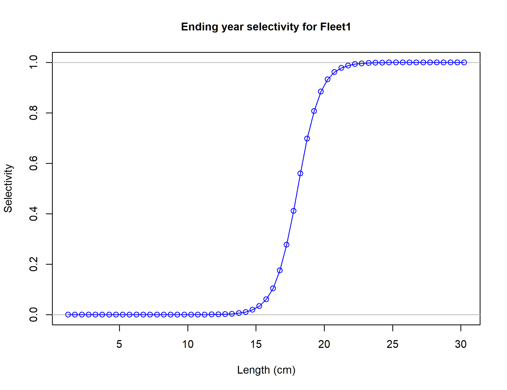Captura
- Aproximación de Pope:
Ignoramos el subíndice de flota por simplicidad:
\[N_{y+1,a+1} = N_{y,a}exp(-M) - \hat{C}_{y,a}exp(-M/2)\]
Luego, se puede aproximar \(F\) mediante:
\[N_{y+1,a+1}exp(M) = N_{y,a}-N_{y,a}(1-exp(-S_a F_{y}))\]
Ver Xiao and Wang (2007).
Captura
- Ecuación de captura de Baranov
Usamos:
\[\hat{C}_{y,a} = \frac{S_aF_y}{M+S_aF_y}N_{y,a}(1-exp(-M-S_aF_y))\]
Donde \(F_y\) son parámetros estimados.
Captura
- Método híbrido: usa la ecuación de Pope y Baranov secuencialmente para estimar \(F\).
- Aplica el método de Pope para obtener una tasa de cosecha en la season
- Conviente la tasa de cosecha al equivalente en la ecuación de Baranov \(F_{hyb}\)
- Ajusta valores \(F_{hyb}\) por medio de iteraciones usando el ratio de captura calculada y observada para cada flota
- Proceder con \(F_{hyb}\) en adelante.
Captura
- Método híbrido: combinación de métodos 2 y 3. Es el método recomendado ya que mejora algunos problemas existentes para el método 3 (e.g., altos valores de \(F\), múltiples flotas).
Ejemplo de dinámica poblacional
Explorar el archivo Excel population-dynamics.xlsx.
Archivo de entrada: control.ss
control.ss
Línea de parámetro siempre tiene 14 valores:
| Columna | Elemento | Descripción |
|---|---|---|
| 1 | LO | Valor mínimo que puede tomar el parámetro |
| 2 | HI | Valor máximo que puede tomar el parámetro |
| 3 | INIT | Valor inicial del parámetro |
| 4 | PRIOR | Valor esperado del parámetro |
| 5 | PRIOR SD | Desviación estándar para el prior |
| 6 | PRIOR TYPE | Tipo de prior |
| 7 | PHASE | Fase de estimación |
control.ss
| Columna | Elemento | Descripción |
|---|---|---|
| 8 | Env var and Link | Enlace a serie de tiempo ambiental |
| 9 | Dev link | Uso de vector de desviación en la función de enlace |
| 10 | Dev min yr | Año inicial de desviación |
| 11 | Dev max yr | Año final de desviación |
| 12 | Dev phase | Fase para estimación de elementos en vector |
| 13 | Block | Bloque o tendencia a ser aplicado |
| 14 | Block function | Forma funcional para el bloque |
En algunas ocasiones (e.g., mortalidad por pesca), veremos que solo los primeros siete valores son necesarios (línea de parámetro corta).
control.ss
Explorar el archivo Excel
control-helper.xlsx(Ctl_Basicsheet) (obtenido de Stock Synthesis Virtual Lab).Explorar SS Manual (sección Control File).
Laboratorio
Preparación de archivo control
Preparar el archivo control para SS.
Podemos hacerlo en tres principales formas:
Modificando el archivo
control.ssdirectamente.Utilizando las funciones
SS_readctlySS_writectlder4ss.Utilizando el SS GUI (interfaz gráfica).
Preparación de archivo control
Ejemplo de cómo utilizar SS_readctl y SS_writectl.
Referencias
Haddon, M. 2011. Modelling and quantitative methods in fisheries. Chapman; Hall/CRC. doi:10.1201/9781439894170.
Lorenzen, K. 2022. Size- and age-dependent natural mortality in fish populations: Biology, models, implications, and a generalized length-inverse mortality paradigm. Fisheries Research 255: 106454. Elsevier BV. doi:10.1016/j.fishres.2022.106454.
Maunder, M.N., Deriso, R.B., Schaefer, K.M., Fuller, D.W., Aires-da-Silva, A.M., Minte-Vera, C.V., and Campana, S.E. 2018. The growth cessation model: A growth model for species showing a near cessation in growth with application to bigeye tuna (thunnus obesus). Marine Biology 165: Not available. Springer Science; Business Media LLC. doi:10.1007/s00227-018-3336-9.
Maunder, M.N., Hamel, O.S., Lee, H.-H., Piner, K.R., Cope, J.M., Punt, A.E., Ianelli, J.N., Castillo-Jordán, C., Kapur, M.S., and Methot, R.D. 2023. A review of estimation methods for natural mortality and their performance in the context of fishery stock assessment. Fisheries Research 257: 106489. Elsevier BV. doi:10.1016/j.fishres.2022.106489.
McGarvey, R., Methot, R.D., Punt, A.E., Matthews, J.M., Taylor, I.G., Feenstra, J.E., and Doering, K. 2024. Performance gains from incorporating dynamic numbers by length-within-age in fishery assessment models. Fisheries Research 276: 107039. Elsevier BV. doi:10.1016/j.fishres.2024.107039.
Methot, R.D., and Taylor, I.G. 2011. Adjusting for bias due to variability of estimated recruitments in fishery assessment models. Canadian Journal of Fisheries and Aquatic Sciences 68: 1744–1760. Canadian Science Publishing. doi:10.1139/f2011-092.
Methot, R.D., and Wetzel, C.R. 2013. Stock synthesis: A biological and statistical framework for fish stock assessment and fishery management. Fisheries Research 142: 86–99. Elsevier BV. doi:10.1016/j.fishres.2012.10.012.
Punt, A.E., and Cope, J.M. 2019. Extending integrated stock assessment models to use non-depensatory three-parameter stock-recruitment relationships. Fisheries Research 217: 46–57. Elsevier BV. doi:10.1016/j.fishres.2017.07.007.
Richards, F.J. 1959. A flexible growth function for empirical use. Journal of Experimental Botany 10: 290–301. Oxford University Press (OUP). doi:10.1093/jxb/10.2.290.
Taylor, I.G., Gertseva, V., Methot, R.D., and Maunder, M.N. 2013. A stock–recruitment relationship based on pre-recruit survival, illustrated with application to spiny dogfish shark. Fisheries Research 142: 15–21. Elsevier BV. doi:10.1016/j.fishres.2012.04.018.
Xiao, Y., and Wang, Y.-G. 2007. A revisit to pope’s cohort analysis. Fisheries Research 86: 153–158. Elsevier BV. doi:10.1016/j.fishres.2007.05.014.